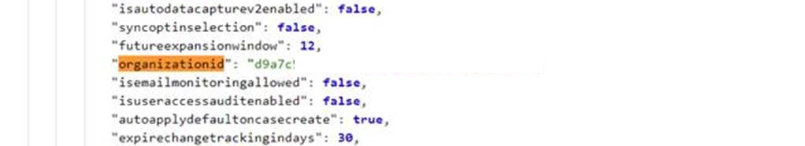
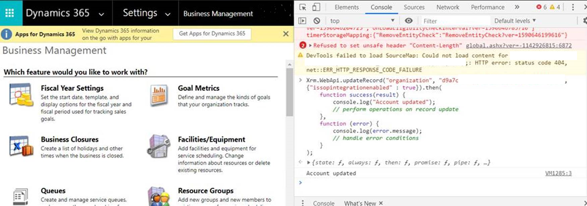
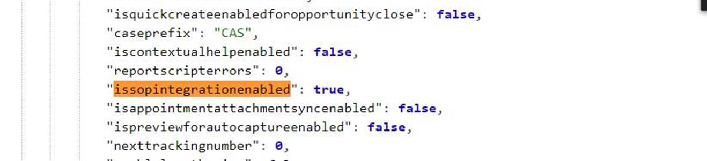
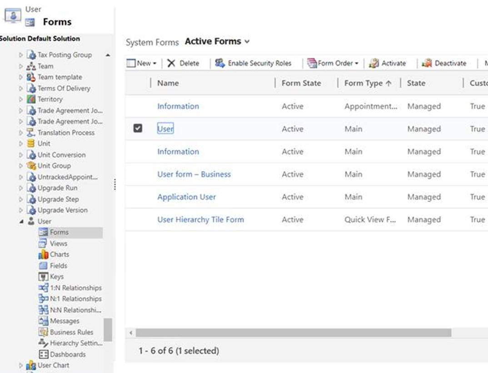
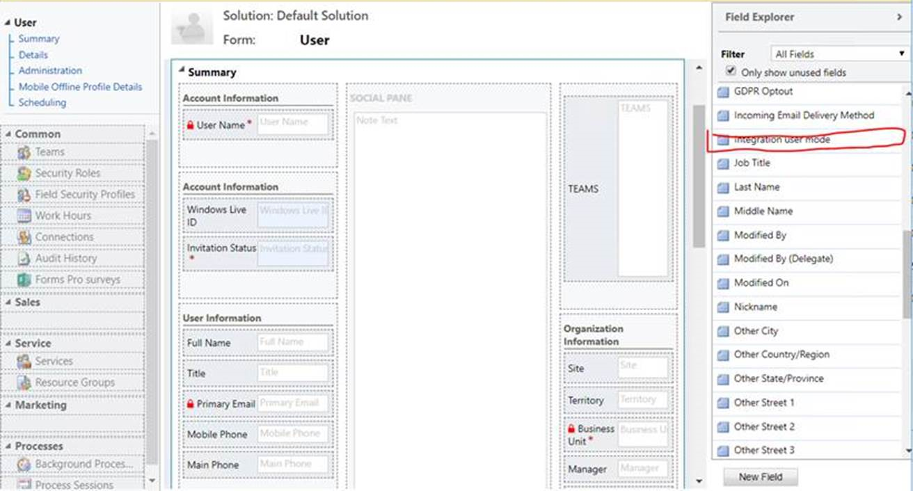
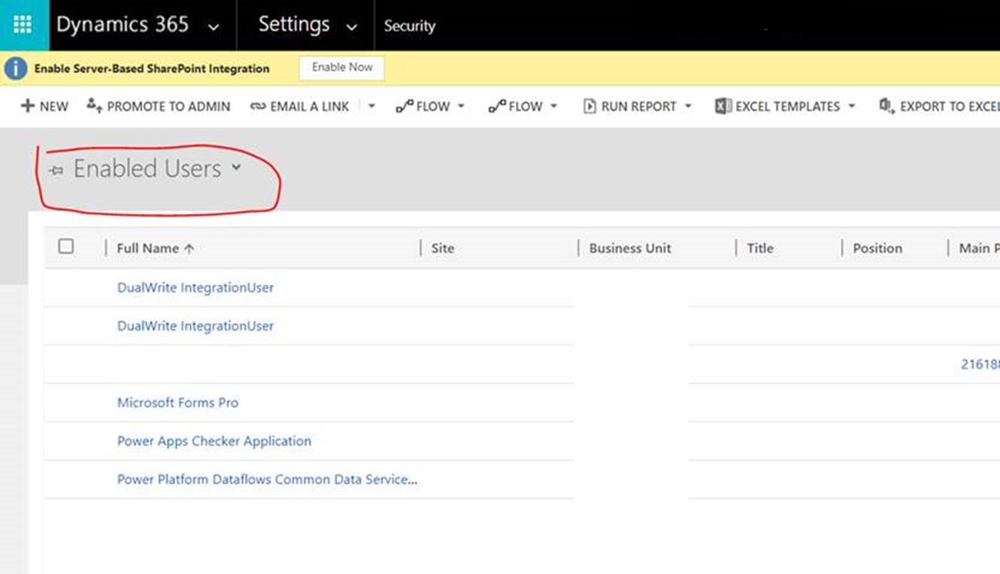
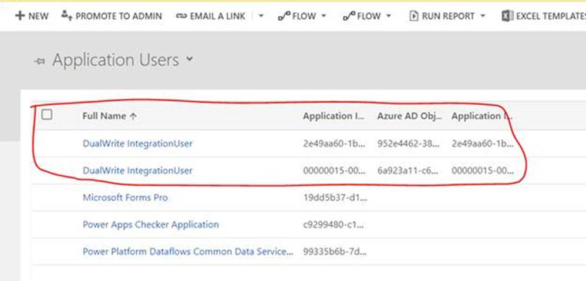
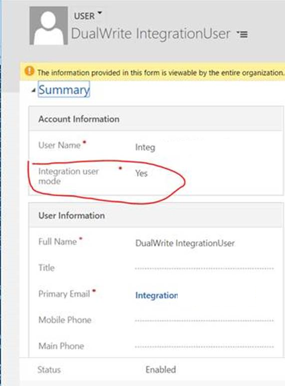

Einrichten eines Mappings für die Auftragsstatusfelder
[!include[banner](../../includes/banner.md)]Die Felder, die den Auftragsstatus angeben, haben in Microsoft Dynamics 365 Supply Chain Management und Dynamics 365 Sales unterschiedliche Aufzählungswerte. Zusätzliche Einstellungen sind erforderlich, um diese Felder in dualem Schreiben abzubilden.
Felder in Supply Chain Management
In Supply Chain Management spiegeln zwei Felder den Status des Auftrags wider. Die Felder, die Sie zuordnen müssen, sind Status und Dokumentstatus.
Die Status-Aufzählung gibt den Gesamtstatus der Bestellung an. Dieser Status wird im Auftragskopf angezeigt.
Die Status-Aufzählung hat die folgenden Werte:
- Offene Bestellung
- Geliefert
- Fakturiert
- Storniert
Die Dokumentstatus-Aufzählung gibt das letzte Dokument an, das für die Bestellung generiert wurde. Wenn die Bestellung beispielsweise bestätigt wird, handelt es sich bei diesem Dokument um eine Auftragsbestätigung. Wenn ein Kundenauftrag teilweise in Rechnung gestellt wird und dann die verbleibende Position bestätigt wird, bleibt der Belegstatus Rechnung erhalten, weil die Rechnung später im Prozess generiert wird.
Die Dokumentstatus-Aufzählung hat die folgenden Werte:
- Bestätigung
- Kommissionierliste
- Lieferschein
- Rechnung
Felder im Sales
In Sales spiegeln geben zwei Felder den Status der Bestellung an. Die Felder, die Sie zuordnen müssen, sind Status und Verarbeitungsstatus.
Die Status-Aufzählung gibt den Gesamtstatus der Bestellung an. Es weist die folgenden Werte auf:
- Aktiv
- Übermittelt
- Erfüllt
- Fakturiert
- Storniert
Die Aufzählung Verarbeitungsstatus wurde eingeführt, damit der Status genau auf Supply Chain Management zugeordnet werden kann.
Die folgende Tabelle zeigt die Zuordnung von Verarbeitungsstatus auf Supply Chain Management.
| Verarbeitungsstatus | Status in Supply Chain Management | Dokumentstatus in Supply Chain Management |
|---|---|---|
| Aktiv | Offene Bestellung | Keines |
| Bestätigt | Offene Bestellung | Bestätigung |
| Entnommen | Offene Bestellung | Kommissionierliste |
| Teilweise geliefert | Offene Bestellung | Lieferschein |
| Geliefert | Geliefert | Lieferschein |
| Teilweise fakturiert | Geliefert | Rechnung |
| Fakturiert | Fakturiert | Rechnung |
| Storniert | Storniert | Nicht zutreffend |
Die folgende Tabelle zeigt die Zuordnung von Verarbeitungsstatus zwischen Sales und Supply Chain Management.
| Verarbeitungsstatus | Status in Sales | Status in Supply Chain Management |
|---|---|---|
| Aktiv | Aktiv | Offene Bestellung |
| Bestätigt | Übermittelt | Offene Bestellung |
| Entnommen | Übermittelt | Offene Bestellung |
| Teilweise geliefert | Aktiv | Offene Bestellung |
| Teilweise fakturiert | Aktiv | Offene Bestellung |
| Teilweise fakturiert | Erfüllt | Geliefert |
| Fakturiert | Fakturiert | Fakturiert |
| Storniert | Storniert | Storniert |
Setup
Um die Zuordnung für die Auftragsstatusfelder einzurichten, müssen Sie die IsSOPIntegrationEnabled und isIntegrationUser-Attribute aktivieren.
Um das IsSOPIntegrationEnabled-Attribut zu aktivieren, führen Sie die folgenden Schritte aus.
Gehen Sie in einem Webbrowser zu
https://<test-name>.crm.dynamics.com/api/data/v9.0/organizations. Ersetzen Sie <test-name> durch den Link Ihres Unternehmens zu Sales.Suchen Sie auf der geöffneten Seite organisationid und notieren Sie sich den Wert.

Öffnen Sie in Sales die Browserkonsole und führen Sie das folgende Skript aus. Verwenden Sie den organisationid-Wert aus Schritt 2.
Xrm.WebApi.updateRecord("organization", "d9a7c5f7-acbf-4aa9-86e8-a891c43f748c", {"issopintegrationenabled" : true}).then( function success(result) { console.log("Account updated"); // perform operations on record update }, function (error) { console.log(error.message); // handle error conditions } );
Überprüfen Sie, ob IsSOPIntegrationEnabled auf true festgelegt ist. Verwenden Sie die URL aus Schritt 1, um den Wert zu überprüfen.

Um das isIntegrationUser-Attribut zu aktivieren, führen Sie die folgenden Schritte aus.
Gehen Sie in Sales zu Einstellung > Anpassung > System anpassen, wählen Sie Benutzerentität aus und öffnen Sie dann Formular > Benutzer.

Suchen Sie im Feld-Explorer Integrationsbenutzermodus und klicken Sie zweimal darauf, um es dem Formular hinzuzufügen. Speichern Sie die Änderung.

Gehen Sie in Sales zu Einstellung > Sicherheit > Benutzer und ändern Sie die Ansicht von Aktivierte Benutzer zu Anwendungsbenutzer.

Wählen Sie die beiden Einträge für DualWrite IntegrationUser aus.

Ändern Sie den Wert des Integrationsbenutzermodus-Felds auf Ja.

Ihre Aufträge sind jetzt zugeordnet.